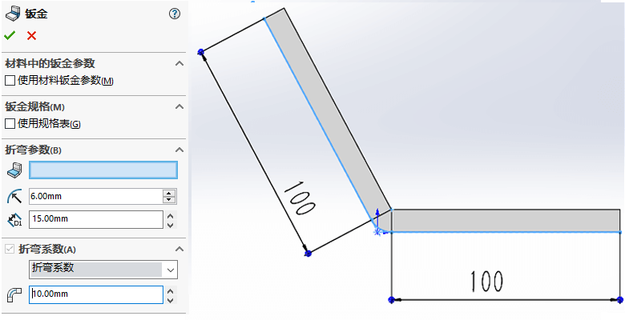
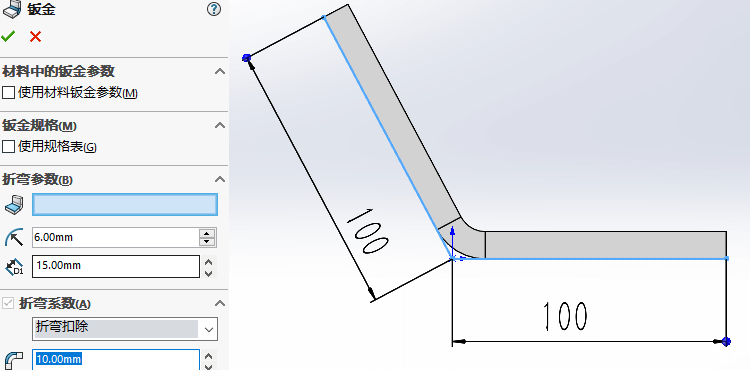
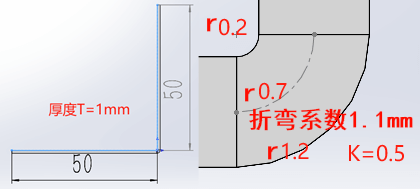

钣金规格表
制作
规格表是以 Excel 表格的形式设置规格，规格不能同名、厚度不能重复（原则就是规格不能重复）。规格表默认位置：
【C:\Program Files\SolidWorks 2022\SOLIDWORKS\lang\chinese-simplified\Sheet Metal Gauge Tables】
规格表内容设置规则是：
- 折弯类型：可以选择不同的计算方式
- 单位：默认可以设置毫米 mm
- 规格内容：在该厚度下，某个半径和角度对于下的规格值
使用
【钣金】钣金零件的首个特征文件夹，里面会放我们钣金参数内容和规格表信息（如下：）。规格表一般是按原有表格格式进行复制添加和修改。
【钣金】使用/编辑特征时，可以选择”规格表”，选择后钣金参数会有所变化。且规格内容来自表格定制的内容
钣金计算方法
下面使用一折弯边演示此三种钣金展开的计算方法。其展开长度不一是因为折弯位置发生了形变（等我找找材料变形图），那么不同的计算方法就是对该变形位置的实际展开的长度计算。
讲究的是变形位置存在一段不变的中性层，该层不管是展开还是折弯，它都是一样的。
K 因子：
这里就是用 K 因子是描述中性层的位置。K 因子：中性面距内折面/厚度，即 t/T 随便说明下，中性层是变化的，不同厚度和半径中性层的位置也会变化的。
模型钣金展开长度：100+100+5.46=205.46

折弯系数：
去除折弯半径的部分，直接使用折弯系数的数值代表该折弯半径的中性层，即固定边+折弯系数即为展开长度。
模型钣金展开长度：100+100+10=210mm
折弯扣除：
草图包含折弯半径的部分，直接使用折弯扣除的数值代表该处重复多余的长度。
模型钣金展开长度：100+100-10=190mm
换算
K因子换算折弯系数
折弯系数=（r + KT)πA ／180
K因子=(折弯系数*180/πA-r)/T
1 | r————内侧半径 |
举例：K因子=0.5、折弯内半径r=0.2mm、厚度T=1mm、带入公式得到折弯系数是：1.1mm
展开长度：边长+边长-折弯内角*2+折弯系数=（50+50-0.2-0.2+1.1）mm =100.7mm
在SW程序里，可以使用方程式定义
1 | "K因子"=((("折弯系数"*180)/("首次折弯角度"*3.14))-"折弯半径")/"折弯厚度" |